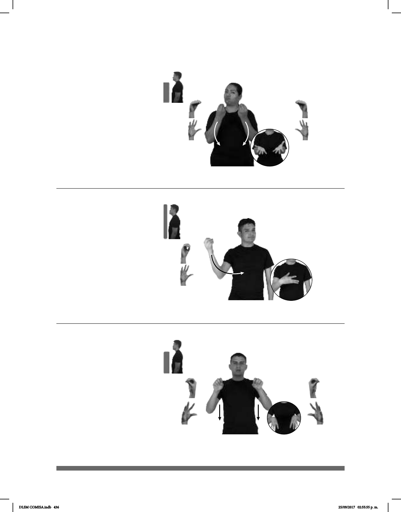

436
Dar
1
/ Ofrecer (O-25)
Seña: SS
Seña que pasa de O.5
a 5.2
Palmas hacia adentro.
A la altura del pecho.
Movimiento: Recto hacia el frente
mientras los dedos se extienden.
Se emite un
click.
Simula la acción de
entregar algo a alguien.
1. v. tr. Ofrecer algo a
alguien, proporcionarle o concederle
lo que pide, necesita o le interesa. 2.
v. tr. Poner a la disposición de alguien
alguna cosa o algún servicio para que
disfrute de ello.
____________________________________neg__
AYER pos-MI HERMANO PASTEL él-DAR-a-mí
Mi hermano no me dio pastel ayer.
Seña: SM
Seña que pasa de O.1
a 5.2
Palma hacia la izquierda.
A la altura del pecho. del
lado derecho al centro.
Movimiento: Recto mientras los dedos
se extienden.
Cabeceo en
diagonal, labios distendidos.
loc. adv. De cualquier
manera, sea como sea, inevitablemente.
Seña: SS
Seña que pasa de
O.7 a 5.4
Las palmas inician
hacia afuera y terminan hacia abajo.
De los hombros al
abdomen.
Movimiento: Las manos se
mueven de atrás hacia adelante
mientras los dedos se extienden.
Boca
abierta.
1. v. tr. Abandonar o
interrumpir una actividad; no
realizarla más.
De todos modos – De todas maneras (O-26)
– De todas formas
(O-27)
_______________neg
pro-YO NO HAMBRE DE-TODAS-FORMAS PASTEL pro-YO COMER
No tengo hambre, de todas formas comeré pastel
_____________________________neg___
pro-TÚ NO PREOCUPAR DEJARLO-ASÍ
No te preocupes, déjalo así
DLSM COMISA.indb 436 25/09/2017 02:55:55 p. m.